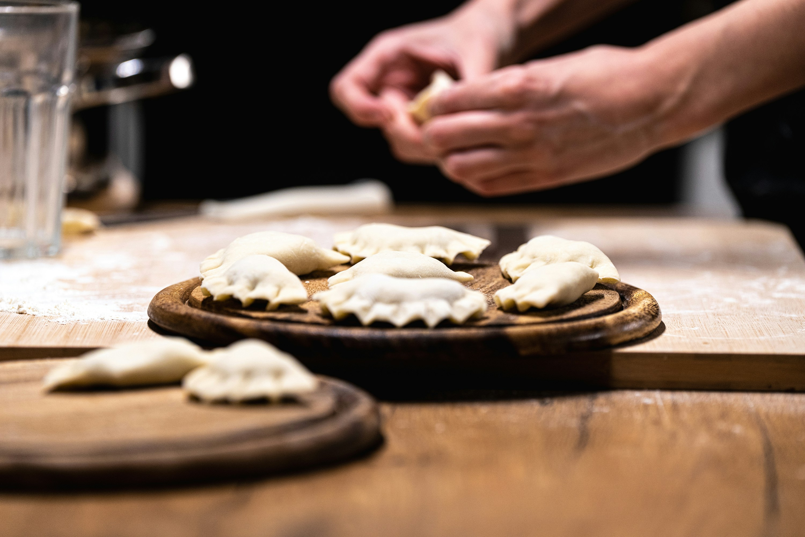

Cottage Cheese Perogies

Description
These cottage cheese pierogies are a very easy recipe and a wonderful twist on ordinary pierogies. The cheese-filled pierogies taste great just boiled or fried with a little butter. Eat them with sour cream, and you will have a wonderful dinner. You can easily double or triple the recipe and freeze extras.
Ingredients
- 1 ¾ cups dry-curd cottage cheese
- 2 egg yolks
- 1 ¾ teaspoons salt (Optional), divided
- 2 cups all-purpose flour
- ½ teaspoon baking powder
- ¾ cup cold water
- 2 tablespoons vegetable oil
Steps
- Combine cottage cheese, egg yolks, and 3/4 teaspoon salt in a medium bowl; set aside.
- Whisk flour, remaining 1 teaspoon salt, and baking powder together in a separate bowl. Add cold water and oil; mix or knead into a smooth dough.
- Roll dough out on a lightly floured surface; cut into 3-inch circles using a glass, can, or cookie cutter. Place a spoonful of cottage cheese filling onto each circle. Fold in half and pinch edges together to seal.
- Bring a large pot of lightly salted water to a boil. Carefully drop pierogies into water; cook until they float, 3 to 4 minutes. Remove from water with a slotted spoon; place on a cooling rack set over a baking sheet to drain.